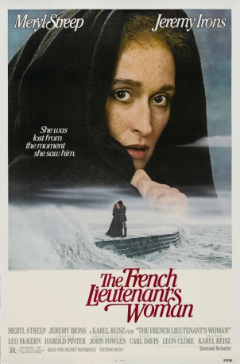

#7250 Die Geliebte des französischen Leutnants
Alternativ: The French Lieutenant's Woman
Auszeichnungen: für 5 Oscars nominiert 1 GoldenGlobes gewonnen 3 BAFTA-Awards gewonnen
 
 IMDB-Wertung: 7.0 / 10
IMDB-Wertung: 7.0 / 10  Metascore: 0
Metascore: 0 
A film is being made of a story, set in 19th century England, about Charles, a biologist who's engaged to be married, but who falls in love with outcast Sarah, whose melancholy makes her leave him after a short, but passionate affair. Anna and Mike, who play the characters of Sarah and Charles, go, during the shooting of the film, through a relationship that runs parallel to that of their characters.
Jahr: 1981
Dauer: 118 Minuten
FSK: 12
Land: England Studio: Warner Home VideoTonspuren: DD2.0 - ,
Untertitel:
Auflösung: 1080p (1920x1040) Größe: 7464 MB
Genre: Drama, Liebe
Regisseur: Karel Reisz
Drehbuch: John Fowles
Soundtrack:
Darsteller:
 Meryl Streep als Sarah / Anna
Meryl Streep als Sarah / Anna Jeremy Irons als Charles Henry Smithson / Mike
Jeremy Irons als Charles Henry Smithson / Mike Peter Vaughan als Mr. Freeman
Peter Vaughan als Mr. Freeman- Colin Jeavons als Vicar
 Liz Smith als Mrs. Fairley
Liz Smith als Mrs. Fairley- John Barrett als Dairyman
 Leo McKern als Dr. Grogan
Leo McKern als Dr. Grogan- Arabella Weir als Girl on Undercliff
- Ben Forster als Boy on Undercliff
- Anthony Langdon als Asylum Keeper
 Richard Griffiths als Sir Tom
Richard Griffiths als Sir Tom Richard Hope als 3rd Assistant
Richard Hope als 3rd Assistant- Michael Elwyn als Montague
 David Warner als Murphy
David Warner als Murphy Alun Armstrong als Grimes
Alun Armstrong als Grimes Penelope Wilton als Sonia
Penelope Wilton als Sonia Michael Dickins als Fisherman , uncredited
Michael Dickins als Fisherman , uncredited- Georgina Hale als Actress at Wrap Party , uncredited
- Hilton McRae als Sam
- Emily Morgan als Mary
- Charlotte Mitchell als Mrs. Tranter
- Lynsey Baxter als Ernestina Freeman
- Jean Faulds als Cook
- Patience Collier als Mrs. Poulteney
- Catherine Willmer als Dr. Grogan's Housekeeper
- Edward Duke als Nathaniel
 Graham Fletcher-Cook als Delivery Boy
Graham Fletcher-Cook als Delivery Boy- Toni Palmer als Mrs. Endicott
- Cecily Hobbs als Betty Anne
- Doreen Mantle als Lady on Train
- Gérard Falconetti als Davide
- Joanna Joseph als Lizzie
- Jude Alderson als Red Haired Prostitute
- Cora Kinnaird als 2nd Prostitute
- Orlando Fraser als Tom Elliott
- Fredrika Morton als Girl
- Alice Maschler als 2nd Girl
- Vicky Ireland als (uncredited
- Janet Rawson als (uncredited
- Clare Travers-Deacon als (uncredited
Datei: X:\1981\Geliebte des französischen Leutnants, Die (1981, FSK12, 1920x1040).mkv seit 09.10.2017
Festplatte: HD 1980-1986
 Es gibt insgesamt 33 Filme in der Gruppe '1981'
Es gibt insgesamt 33 Filme in der Gruppe '1981'